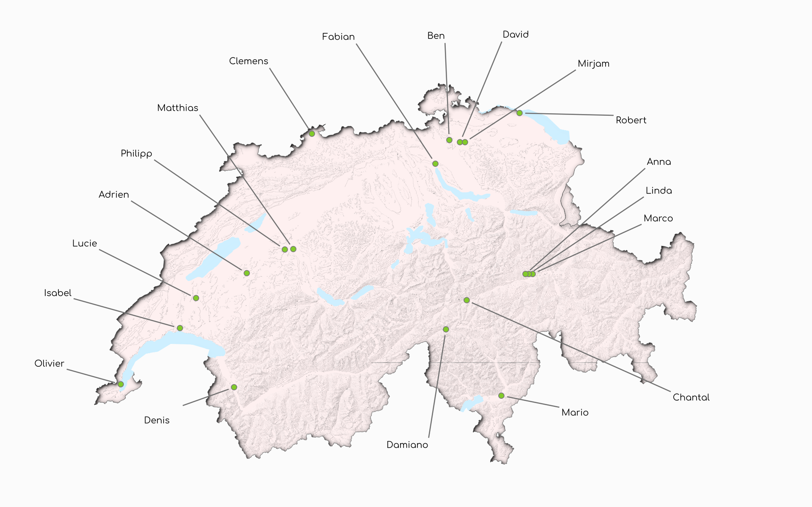
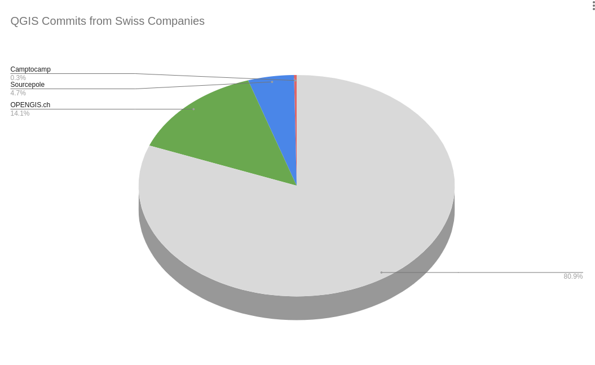
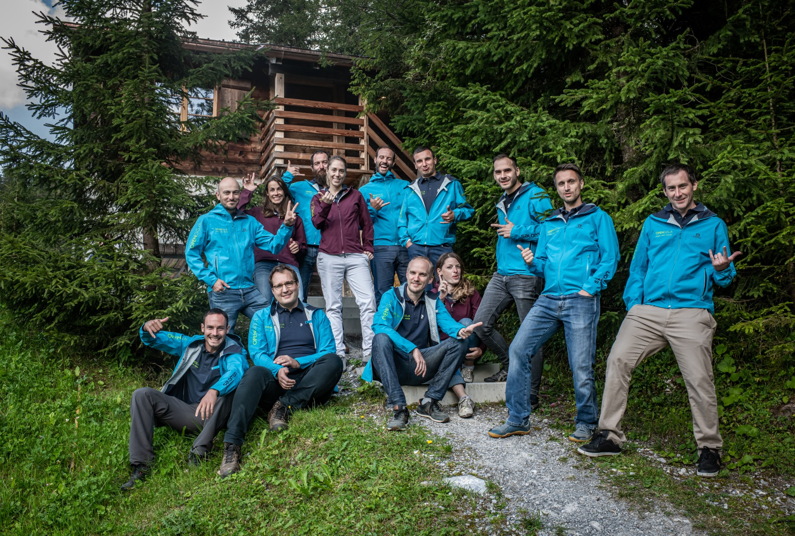
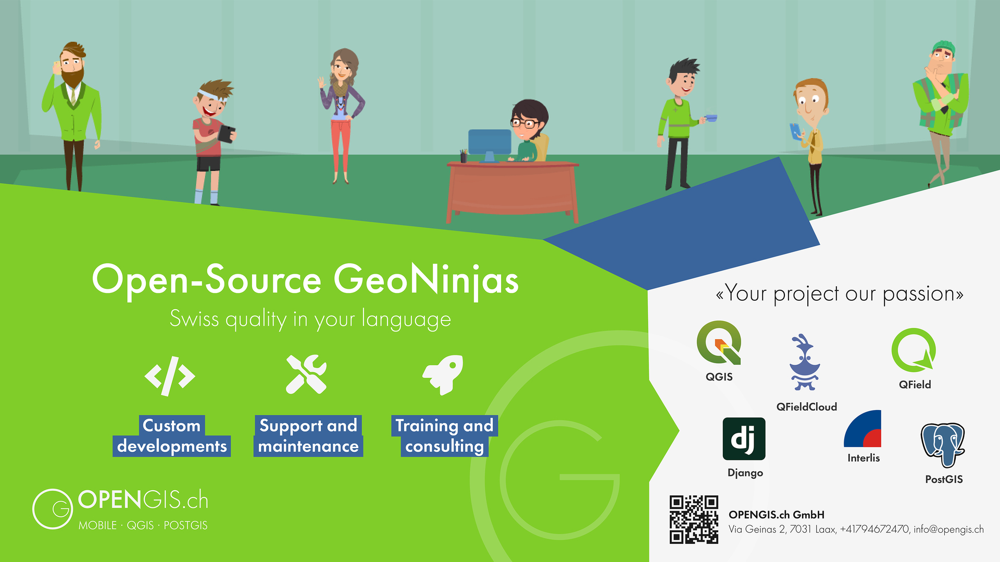

Open source Geo-spatial Experts at your doorsteps
in your language
We are a
dynamic
group of
developers
and
consultants
expert in Open Source geo technologies

Where are we?

What do we do?
QGIS → Core developers, PSC Chair
QGIS Plugins → Core developers and mantainers of large plugins
QField (mobile QGIS) → Creators and maintainers
PostGIS → Experts
GeoData Infrastructure → Planning and deployment experts
Interlis → contributors
How do we work?
AGILE
Tailor made
OPENSOURCE
Passion for quality
Swiss made
Who works with us?
Confederation
: Swisstopo, BAFU, BABS, BAK
Cantons
: SH, SO, TI, ZG, GR, JU, VD, NE, SZ
Cities
: Bern, Lausanne, Thalwil, Pully, Vevey, Neuchatel, Strasbourg, ...
Institutions
: UN, GIZ, SIGE, ibW, OST, Uni Bern, BIZ-GEO …
Private sector
: DB, SOB, SINEF, OPAN ...
International
: Geoscience Australia, World Bank, ...

Follow us:
@OPENGISch
@QFieldForQGIS
@QFieldCloud
opengis.ch/blog
